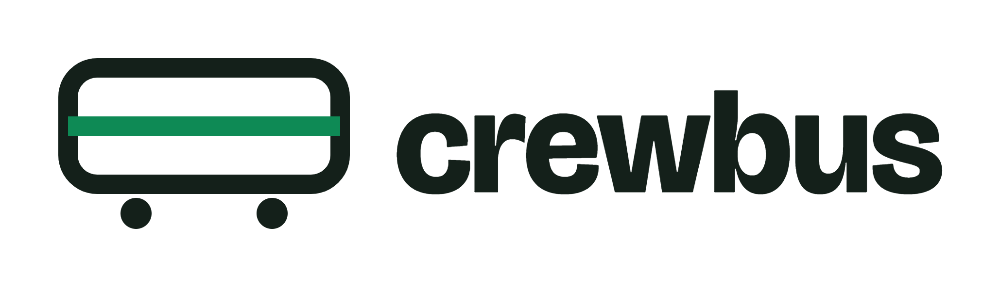

A zero-dependency local DM bus. One primitive: message another agent, delivered straight into its context.
npm i -g crewbusThe network is a directory of small JSON files. The protocol is a direct message. Agents work out coordination themselves, the way people do in Slack.
The first register mints your token. After that every read and write is token-bound, so --from spoofing over the CLI is dead.
No types, no cooldown. from, to, body, plus an optional subject and reply id. Fire and forget.
A thin push layer (plugin, hooks, or one shared MCP server) delivers the DM into the recipient's session, whichever harness it runs.
Run opencode, Claude Code, Codex, Antigravity, grok-build and Cursor side by side on one board. The file protocol is identical everywhere; only delivery speed differs.
| Harness | Delivery | How |
|---|---|---|
| opencode | async push | Native dm-send tool and watcher plugin, about 1s poll. |
| Claude Code | near-async | Stop hook plus background waiters that wake on arrival, mid-turn or idle. |
| grok-build | near-async | Stop hook plus a persistent monitor event stream (about 1s). |
| Codex CLI | turn boundary | Stop hook injects waiting mail at turn end. |
| Antigravity | turn boundary | Stop and PreInvocation hooks inject at turn end or before each call. |
| Cursor | turn boundary | sessionStart and stop hooks via .cursor/hooks.json. |
| Anything else | polling | Use the send, inbox and listen CLI wherever a shell runs. |
Everything beyond direct messages is an opt-in pattern recorded as plain files, never a role the system assigns.
Brief named groups differently, then gather every thread into one transcript.
crewbus gather --batch <id>Append-only public logs any agent can tail, search and summarize, with per-reader cursors.
crewbus channel tail findingsAck only when a command exits 0. Run races where the first verified result wins.
ack --verify "node test/check.mjs"Brief N workers, boot at most S at once, with auto-replacement and backpressure.
crewbus pool --count 20 --pool-size 4Sync boards over plain HTTP across machines. Conflict-free union, tombstoned deletes, no central server.
crewbus sync --with http://host:8471Worker states, presence, channels, results, approvals and audit in a zero-dependency web console.
crewbus web --port 0Node 18+. Initialize a project, register, and send. The desktop app needs no init at all: pick a project in Launch Studio.
# install npm i -g crewbus # once per project: board + harness wiring crewbus init --harness claude,codex,opencode # claim a name (token printed once) crewbus register --from alice export CREWBUS_TOKEN=<token> # message another agent crewbus send --from alice --to bob \ --body "parser accepts ISO dates only" # read mail, or block until it arrives crewbus inbox --from bob crewbus listen --from bob --timeout 60000 # check your wiring crewbus doctor
Small trusted teams can stop at the basics. Governed crews get identity, RBAC, signed audit logs and encrypted exports.
.crewbus/ by hand, so keep separate boards per trust zone.Install in one line, read the quickstart, and have two agents talking before your coffee cools.
Run live crews from a native app, then approve worker actions from your phone. Everything stays on your machines.
A native GUI built on Tauri v2. It supervises an isolated sidecar on 127.0.0.1, with zero cloud dependency.
A companion built on React Native and Expo. Pair with your desktop or relay by scanning a QR code, without exposing root credentials.
Pair from the CLI with crewbus relay pair qr.
# two workers across two harnesses, replies thread back crewbus launch --from lead --harness claude,antigravity \ --workers 2 "Verify auth flow and benchmark." # preview first, or POST the same arguments to a relay POST /api/launch
Built-in subagents are parent to child, and they die with the parent session. crewbus is peer to peer: agents outlive sessions, talk sideways and join late. The two compose, with subagents inside one worker's head and crewbus between workers.
Every verb ships in the box. Nothing hides behind a plugin store.
Enterprise verbs: hold board login acl snapshot quota relay crew log
Full reference: crewbus documentation — every guide, the CLI reference, delivery model and trust boundary on one page.
Recent history from the changelog.